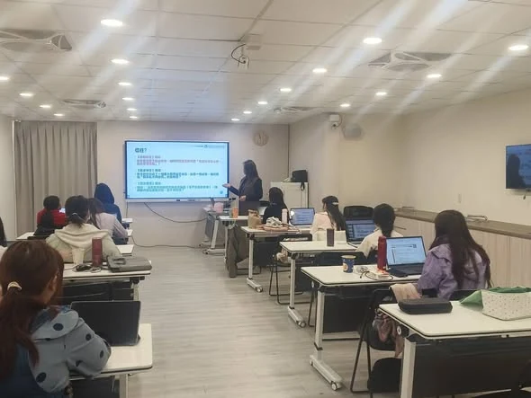

銀髮俱樂部先修班：從熟悉的事開始
在銀髮俱樂部先修班的手機課程裡，教學從長輩手邊的裝置與日常需求開始。遇到 AI 這類新工具，有時連第一個問題都不知道怎麼開口。可以先試一件熟悉的小事，例如把看不懂的訊息換成白話，或替一段想傳給家人的文字試幾種說法。一步一步練習輸入、閱讀回覆和補問，讓學員找到願意再試一次的理由。
把工具帶回自己的生活
課程結束後，學員若遇到類似的情境，還能用課堂練過的方法自己試一次。手機課可以從拍照、整理照片、分享生活開始，也能接到圖像創作。使用 AI 時，則練習說明自己的需求、補上條件，並把重要資訊和原始來源再核對一遍。回到家後，這些方法可以用來整理一段活動紀錄，也可以把自己想說的故事做成一張圖。
職場初階 AI 教學：把問題問清楚，再核對資料
職場課程更重視多輪對話與資訊辨識。練習從實際案例開始，先釐清工作目標，再逐輪補上背景、對象與輸出格式。以社區議題為例，可以先彙整不同來源的資料，再標出尚待確認的資訊，最後把討論結果整理成同事能接手的摘要或行動清單。2026 年 3 月，國際嬰幼兒教育協會也分享了一場面向教育工作者的實作課。課程把文字與圖像生成放在一起練習，讓老師思考如何用工具減輕行政負擔，把時間留給孩子和家長。
